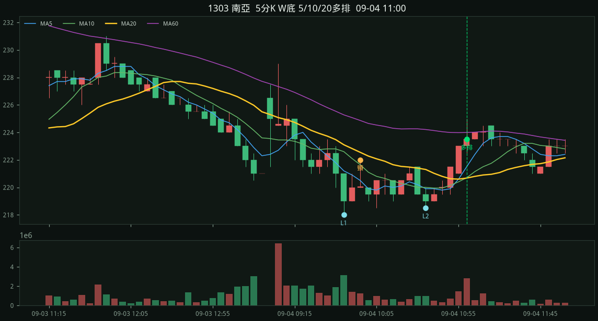
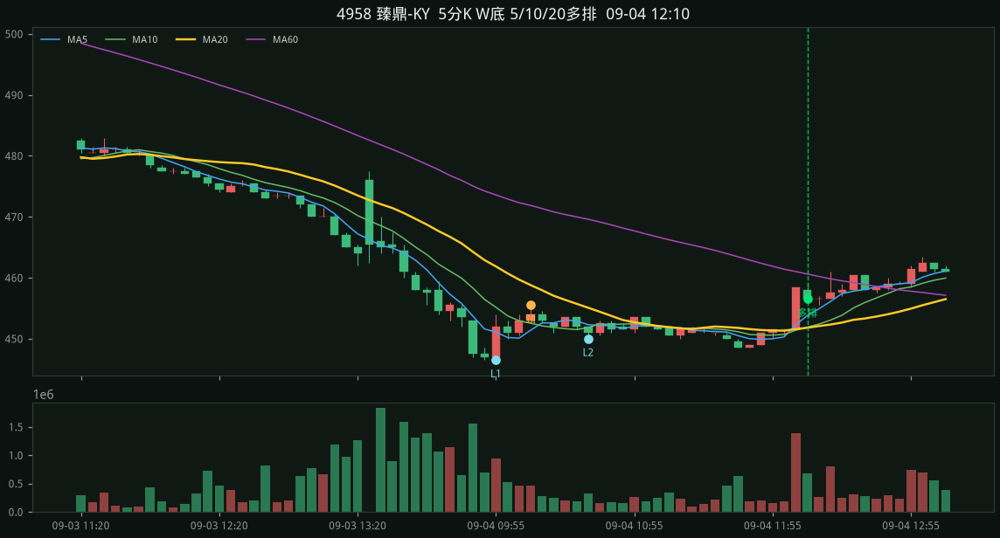
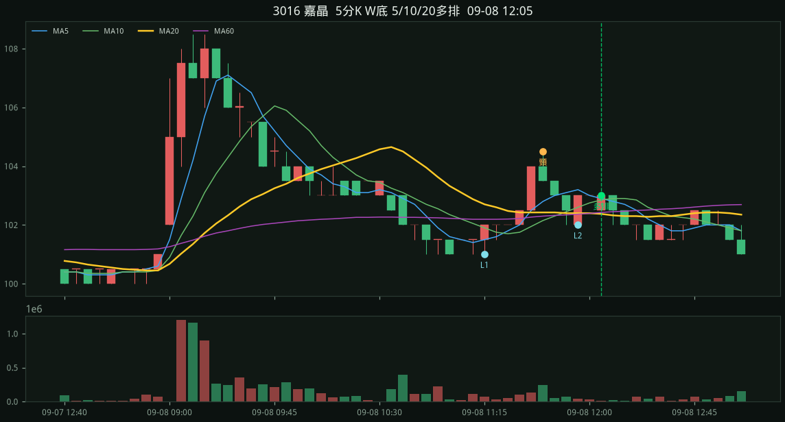
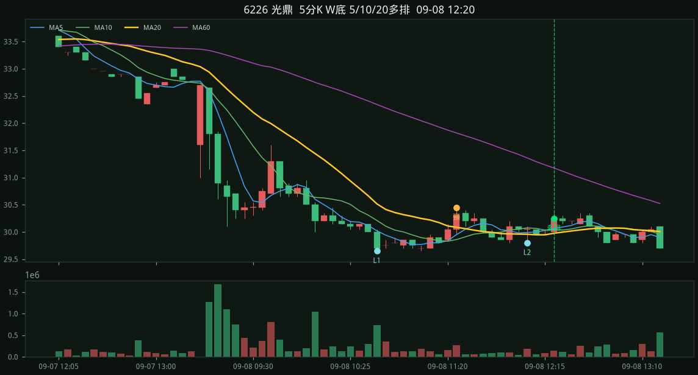
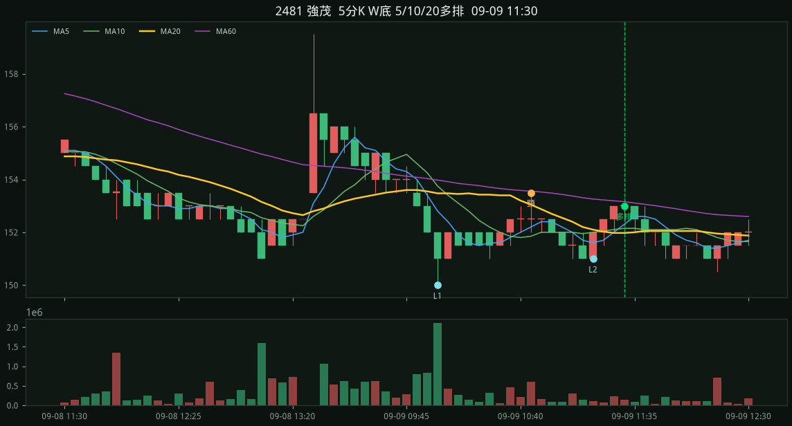
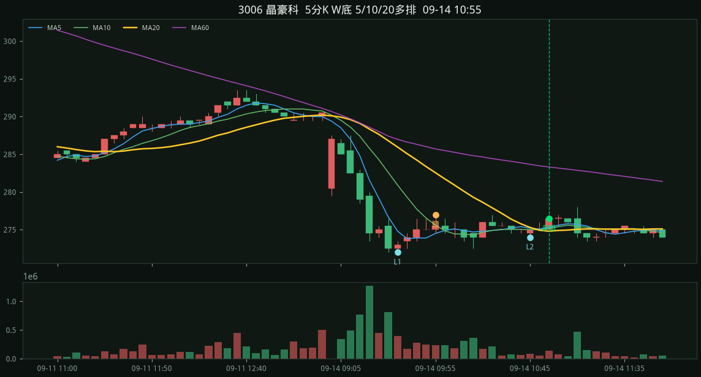
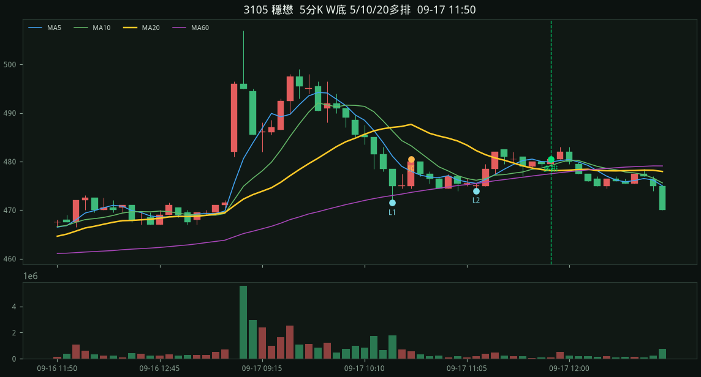
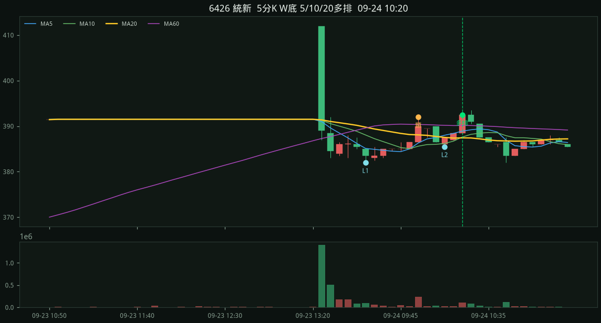
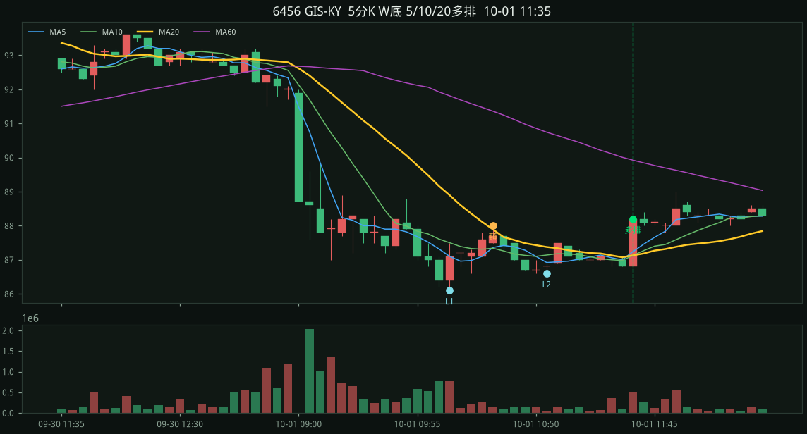
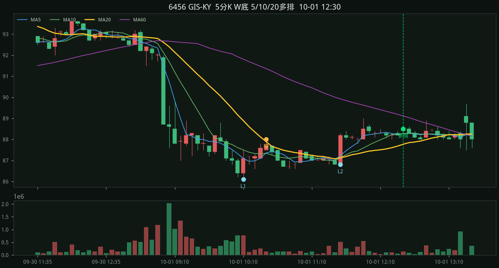

#1 · 1303 南亞2026-09-04 11:00
223.50
收盤 223.50 MA5 221.50 > MA10 220.70 > MA20 220.68 L1 218.00 / L2 218.50 / 頸線 222.00 停損 218.00 量度 226.00 彈回 2.52% 站上 1.28% 深度 1.83% 跌幅 5.96% 當日殺 5.05%

2026-09-04～2026-10-03 · 60d · 股價<700 · 嚴格 · 掃描 100 檔
規則：五分 K 做出 W 底（先大跌、兩個相近低點），等五分 MA5>MA10>MA20 多頭排列才進場。
嚴格：同一天做出 W、09:15 後、當天五分圖先跌 ≥3.5%、回看出發高點跌 ≥5.5%、頸線深度 ≥1.25%、兩低點價差 ≤1.0%、第二腳不能更低、右腳從頸線回落 ≥1.0%、從低點彈回 1.1%～3.5%、收盤站上 MA20 ≥0.45%，且五分 MA5>MA10>MA20 多頭排列才進場。對齊國巨 515/515→11:50 多排、南亞科 480/482→11:55 多排。缺口後貼箱型打底（旺宏、華邦電那種）不算 W。開盤當根當 L1、頸線幾乎漲回殺勢起點（台虹那種 V）、或殺完貼著地板的淺箱（台勝科、台玻那種）也不算 W。瀑布殺完的小台階、第二腳更低的下階、第二低後橫很久才多排也不算。
09-04 1303 南亞、4958 臻鼎-KY
09-08 3016 嘉晶、6226 光鼎
09-09 2481 強茂
09-14 3006 晶豪科
09-17 3105 穩懋
09-24 6426 統新
09-30 3624 光頡
10-01 6456 GIS-KY
收盤 223.50 MA5 221.50 > MA10 220.70 > MA20 220.68 L1 218.00 / L2 218.50 / 頸線 222.00 停損 218.00 量度 226.00 彈回 2.52% 站上 1.28% 深度 1.83% 跌幅 5.96% 當日殺 5.05%

收盤 456.50 MA5 453.80 > MA10 451.90 > MA20 451.80 L1 446.50 / L2 450.00 / 頸線 455.50 停損 446.50 量度 464.50 彈回 2.24% 站上 1.04% 深度 2.02% 跌幅 8.17% 當日殺 6.94%

收盤 103.00 MA5 102.90 > MA10 102.85 > MA20 102.38 L1 101.00 / L2 102.00 / 頸線 104.50 停損 101.00 量度 108.00 彈回 1.98% 站上 0.61% 深度 3.47% 跌幅 7.43% 當日殺 7.43%

收盤 30.25 MA5 30.06 > MA10 30.04 > MA20 29.97 L1 29.65 / L2 29.80 / 頸線 30.45 停損 29.65 量度 31.25 彈回 2.02% 站上 0.92% 深度 2.70% 跌幅 13.32% 當日殺 10.29%

收盤 153.00 MA5 152.30 > MA10 152.15 > MA20 151.97 L1 150.00 / L2 151.00 / 頸線 153.50 停損 150.00 量度 157.00 彈回 2.00% 站上 0.67% 深度 2.33% 跌幅 6.33% 當日殺 6.33%

收盤 276.50 MA5 275.30 > MA10 275.15 > MA20 274.80 L1 272.00 / L2 274.00 / 頸線 277.00 停損 272.00 量度 282.00 彈回 1.65% 站上 0.62% 深度 1.84% 跌幅 7.90% 當日殺 5.70%

收盤 480.50 MA5 479.90 > MA10 479.15 > MA20 478.12 L1 471.50 / L2 474.00 / 頸線 480.50 停損 471.50 量度 489.50 彈回 1.91% 站上 0.50% 深度 1.91% 跌幅 7.53% 當日殺 7.53%

收盤 392.50 MA5 388.90 > MA10 387.60 > MA20 387.43 L1 382.00 / L2 385.50 / 頸線 392.00 停損 382.00 量度 402.00 彈回 2.75% 站上 1.31% 深度 2.62% 跌幅 7.85% 當日殺 7.85%

收盤 137.00 MA5 136.80 > MA10 136.15 > MA20 135.90 L1 134.00 / L2 135.00 / 頸線 136.50 停損 134.00 量度 139.00 彈回 2.24% 站上 0.81% 深度 1.87% 跌幅 7.46% 當日殺 7.46%

收盤 88.20 MA5 87.24 > MA10 87.13 > MA20 87.13 L1 86.10 / L2 86.60 / 頸線 88.00 停損 86.10 量度 89.90 彈回 2.44% 站上 1.23% 深度 2.21% 跌幅 8.71% 當日殺 6.85%

收盤 88.50 MA5 88.28 > MA10 88.27 > MA20 87.77 L1 86.10 / L2 86.80 / 頸線 88.00 停損 86.10 量度 89.90 彈回 2.79% 站上 0.83% 深度 2.21% 跌幅 8.71% 當日殺 6.85%
